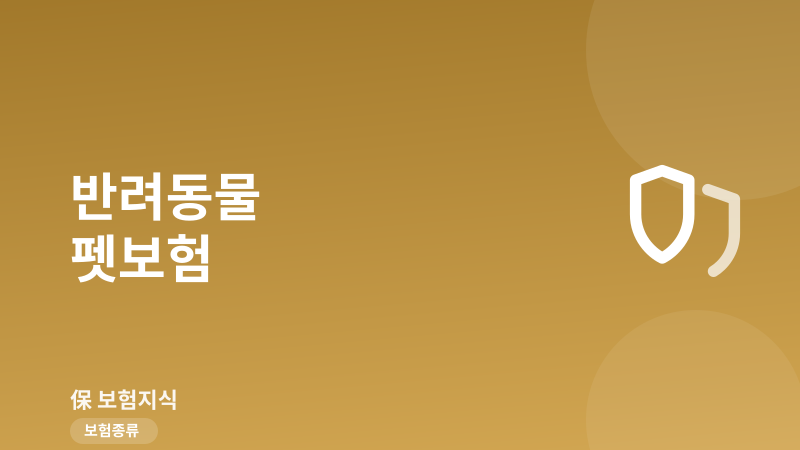
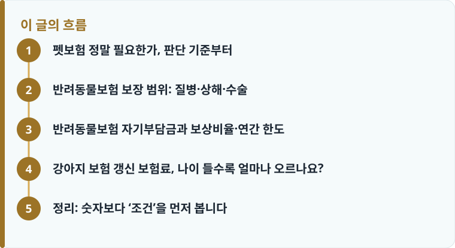

펫보험은 질병·상해 치료비를 보상비율만큼 돌려주는 상품으로, 자기부담금과 연간 한도 때문에 실제 수령액은 청구액보다 적습니다.
보상비율(50·70·90%), 자기부담금, 연간·항목별 한도, 갱신주기와 가입 연령 상한을 함께 확인해야 합니다.
가입 전 이미 있던 질환(기왕증)은 면책 대상이고, 나이가 들수록 갱신 보험료가 오르는 구조라는 점을 기억해야 합니다.
펫보험 정말 필요한가, 판단 기준부터
반려동물은 사람과 달리 건강보험이 없어서 병원비 전액을 보호자가 부담합니다. 슬개골 탈구 수술이 한쪽에 100만 원 안팎, 이물질 제거 개복수술이나 종양 절제는 수백만 원까지 나오기도 합니다. 펫보험이 필요한지는 이런 큰 비용을 한 번에 감당할 수 있느냐에 달려 있습니다. 매달 병원비를 자력으로 적립할 수 있는 여유가 있다면 굳이 서두를 필요가 없지만, 갑작스러운 목돈 지출이 부담이라면 위험을 나눠 두는 편이 낫습니다. 보험이 위험을 어떻게 분산하는지 헷갈린다면 보험이 위험을 나누는 기본 원리를 설명한 글을 먼저 읽어 두면 판단이 쉬워집니다.
다만 펫보험은 ‘가입만 하면 병원비가 다 해결되는’ 상품이 아닙니다. 자기부담금과 보상비율, 한도가 겹겹이 걸려 있어 실제로 돌려받는 금액은 청구액의 일부입니다. 그래서 ‘필요한가’라는 질문은 ‘내 아이의 어떤 위험을, 얼마나 돌려받는 조건으로 대비할 것인가’로 바꿔서 따져 봐야 합니다.
반려동물보험 보장 범위: 질병·상해·수술
펫보험의 기본 보장은 크게 질병 치료비, 상해 치료비, 수술비로 나뉩니다. 질병은 피부병·구토·설사 같은 내과 질환부터 슬개골·심장 질환까지, 상해는 낙상·교통사고·다른 동물과의 다툼 등으로 생긴 부상을 말합니다. 대부분 통원·입원·수술 치료비를 실제 지출 기준으로 보상하되, 각 항목마다 별도의 한도와 자기부담금이 붙습니다.
주의할 점은 보장에서 빠지는 항목이 많다는 것입니다. 예방접종, 중성화, 미용·스케일링, 임신·출산 같은 예방·선택 진료는 대부분 면책이고, 가입 전부터 앓던 질환도 보장되지 않습니다. 어떤 항목이 왜 제외되고 면책·감액기간이 어떻게 적용되는지는 보장에서 빠지는 항목과 면책·감액기간을 정리한 글에서 개념을 잡아 두면 약관을 볼 때 훨씬 수월합니다.

반려동물보험 자기부담금과 보상비율·연간 한도
실제 수령액을 좌우하는 세 가지가 보상비율, 자기부담금, 연간 한도입니다. 보상비율은 병원비 중 몇 %를 돌려주는지로 보통 50%·70%·90% 중에서 고릅니다. 자기부담금은 청구 건마다 보호자가 먼저 떠안는 금액으로, 건당 1만~3만 원 또는 일정 비율로 설정되는 경우가 많습니다.
예를 들어 보상비율 70%에 건당 자기부담금 1만 원인 상품에서 병원비 20만 원이 나왔다면, 자기부담금을 뺀 19만 원의 70%인 약 13만 원을 받는 식입니다. 여기에 연간 보상 한도(예: 연 500만~1,000만 원)와 통원 1일·수술 1회당 한도까지 걸리면, 큰 병일수록 한도에 막혀 자기 부담이 커집니다. 보상비율이 높을수록 보험료도 오르므로, ‘돌려받는 비율’과 ‘매달 내는 보험료’ 사이에서 균형을 잡는 것이 핵심입니다.
작성·검수 기준
이 글은 특정 펫보험 상품을 권유하기 위한 것이 아니라, 반려동물보험을 고를 때 알아야 할 보장 범위, 자기부담금·보상비율·한도, 갱신 구조라는 일반적인 기준을 설명하기 위해 작성했습니다. 본문의 수술비, 보상비율, 자기부담금, 한도 예시는 이해를 돕기 위한 일반적 수준이며, 실제 조건은 가입 시점의 약관과 개별 상품, 반려동물의 종·나이·건강 상태에 따라 달라질 수 있습니다.
정확한 보장 내용은 본인이 가입할 상품의 약관과 상품설명서, 그리고 가입 전 확인할 항목을 정리한 보험 체크리스트를 함께 확인하는 것이 가장 안전합니다.
강아지 보험 갱신 보험료, 나이 들수록 얼마나 오르나요?
펫보험은 대부분 1년·3년 단위로 갱신하는 갱신형 구조입니다. 반려동물은 사람보다 노화가 빨라 질병 위험이 가파르게 오르기 때문에, 갱신 보험료도 나이가 들수록 계단식으로 뛰는 경우가 많습니다. 어릴 때 월 2만~3만 원대였던 보험료가 노령기에는 그 몇 배가 되기도 합니다. 나이가 들수록 왜 갱신 보험료가 오르는지는 갱신할 때마다 보험료가 뛰는 구조를 자세히 다룬 갱신형 보험료 폭탄 피하는 법에서 원리까지 확인할 수 있고, 갱신형과 비갱신형의 차이 자체가 낯설다면 갱신형과 비갱신형의 구조를 비교한 글을 참고하면 좋습니다.
또 하나 놓치기 쉬운 것이 가입 연령 제한과 기왕증 면책입니다. 많은 상품이 만 8세 전후를 신규 가입 상한으로 두고, 그 이후에는 아예 가입이 어려워집니다. 게다가 가입 전 이미 진단·치료받은 질환은 ‘기왕증’으로 보아 보장에서 제외되므로, 아프기 시작한 뒤에 가입하면 정작 그 병은 보장받지 못합니다. 그래서 펫보험은 건강할 때, 어릴 때 가입을 검토하는 것이 유리합니다. 가입 전에는 다음 순서로 점검해 보세요.
- 내 아이의 나이가 신규 가입 연령 상한 안에 드는지 확인합니다.
- 보상비율(50·70·90%)과 건당 자기부담금 방식을 비교합니다.
- 연간 한도와 통원·수술 항목별 한도를 함께 확인합니다.
- 기왕증·예방진료 등 면책 항목과 대기기간을 약관에서 확인합니다.
- 노령기 예상 갱신 보험료까지 감당 가능한지 총부담으로 따집니다.
정리: 숫자보다 ‘조건’을 먼저 봅니다
펫보험이 필요한지 판단할 때는 월 보험료 숫자보다, 어떤 병을 얼마나 돌려받는지의 조건을 먼저 봐야 합니다. 보상비율과 자기부담금, 연간 한도가 실제 수령액을 결정하고, 갱신형 구조와 가입 연령 제한·기왕증 면책이 ‘언제 가입해야 이득인지’를 가릅니다. 건강하고 어릴 때 조건을 꼼꼼히 비교해 두면, 정작 병원비가 많이 드는 시기에 보장 공백을 만나는 일을 줄일 수 있습니다.
다른 보험 정보 글이 궁금하다면 보험지식 블로그에서 이어 읽어 보세요. 가입 전에는 반드시 약관과 상품설명서를 확인하는 것이 가장 안전한 방법입니다.